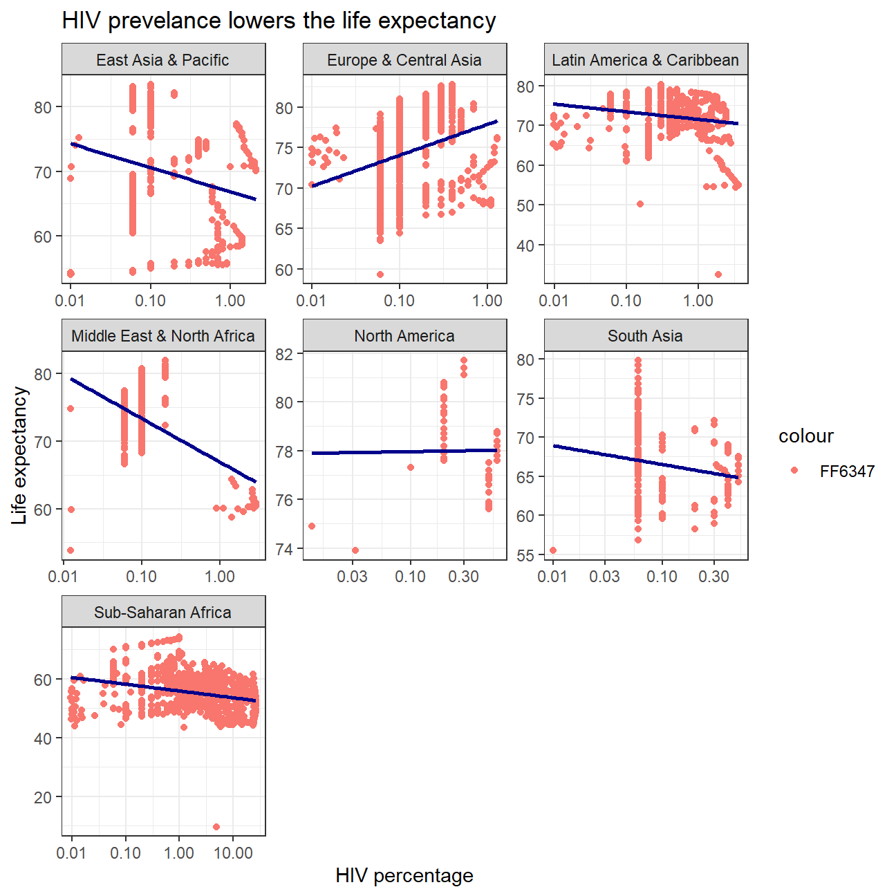
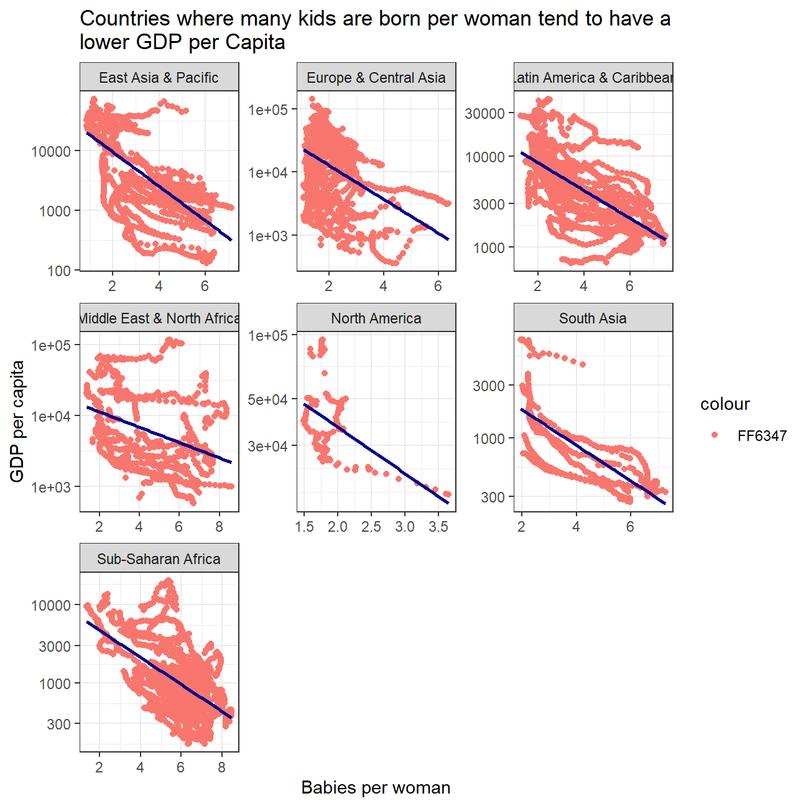
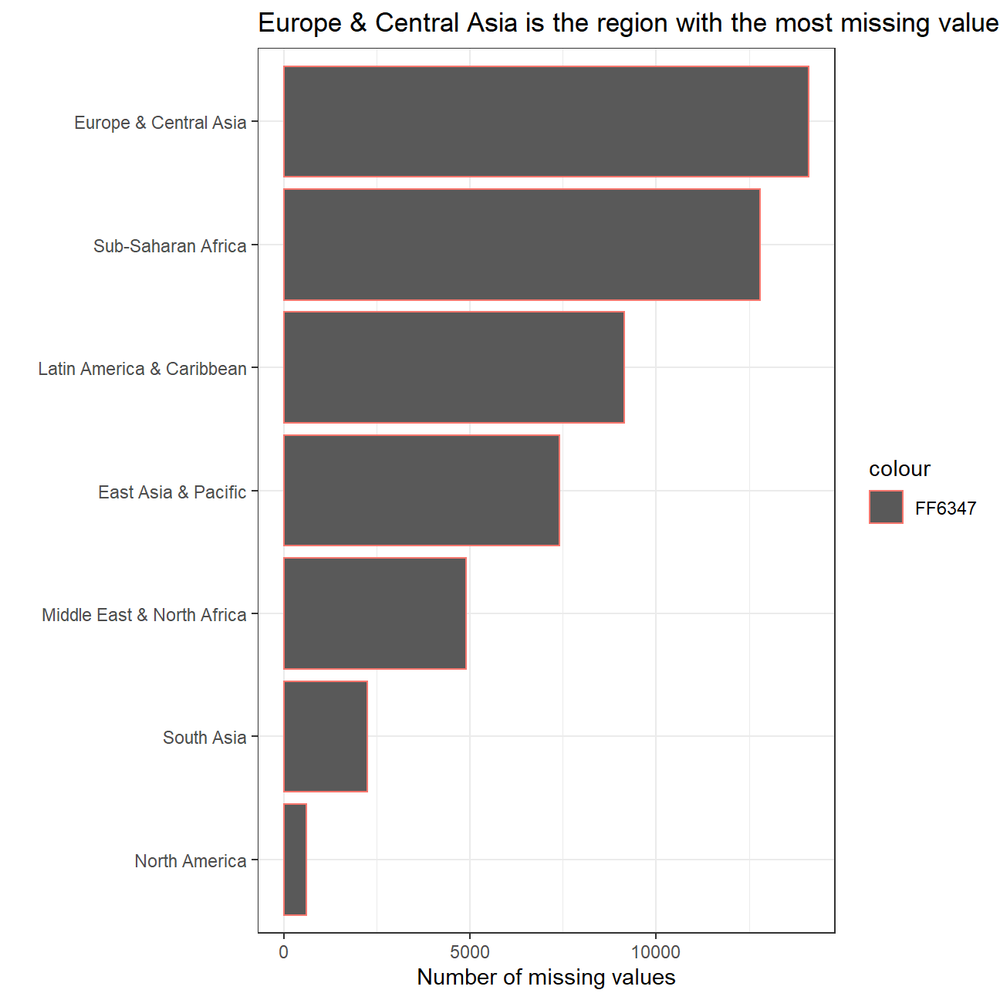
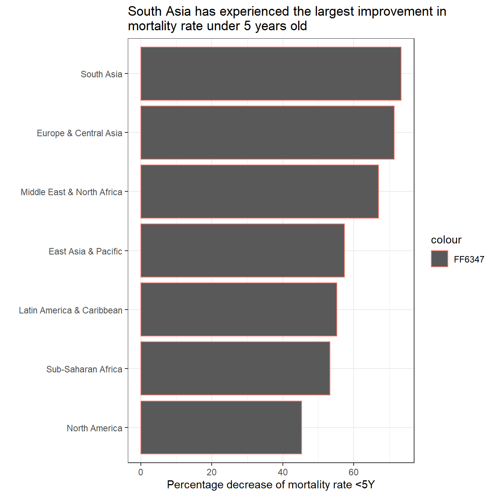
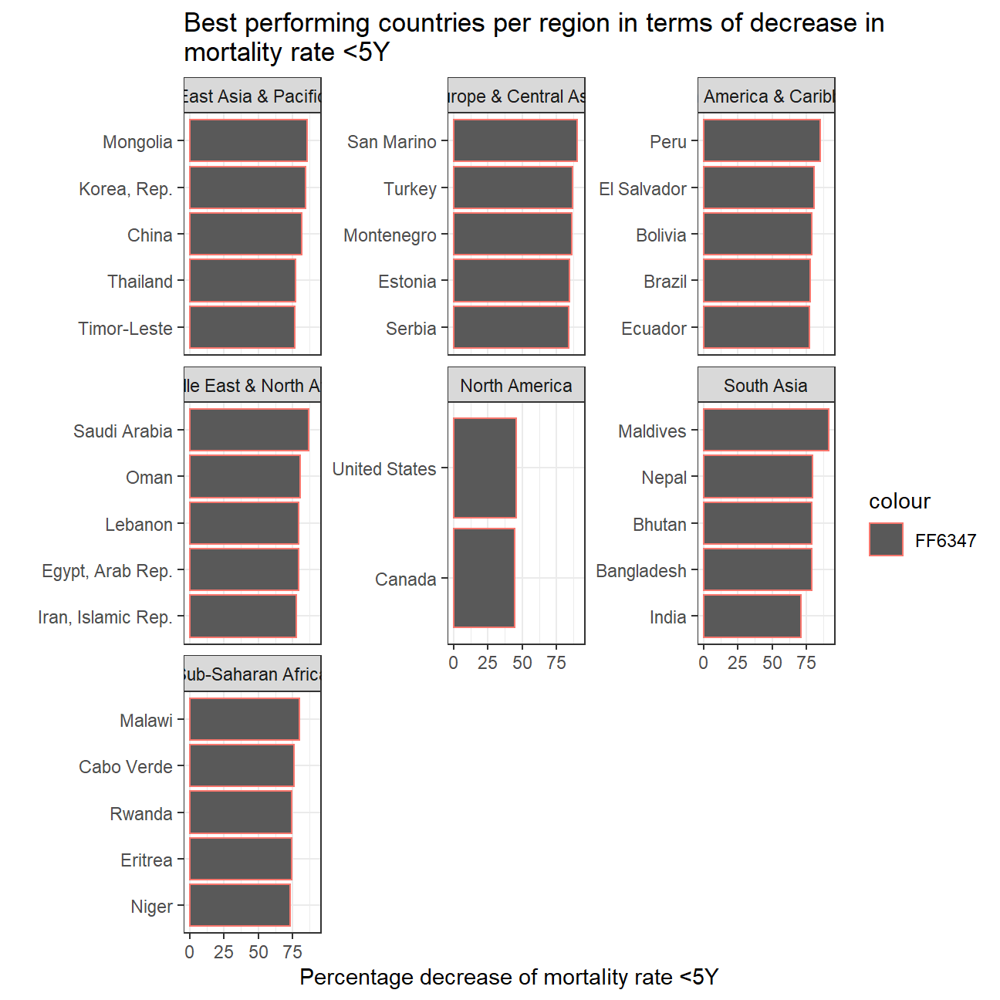
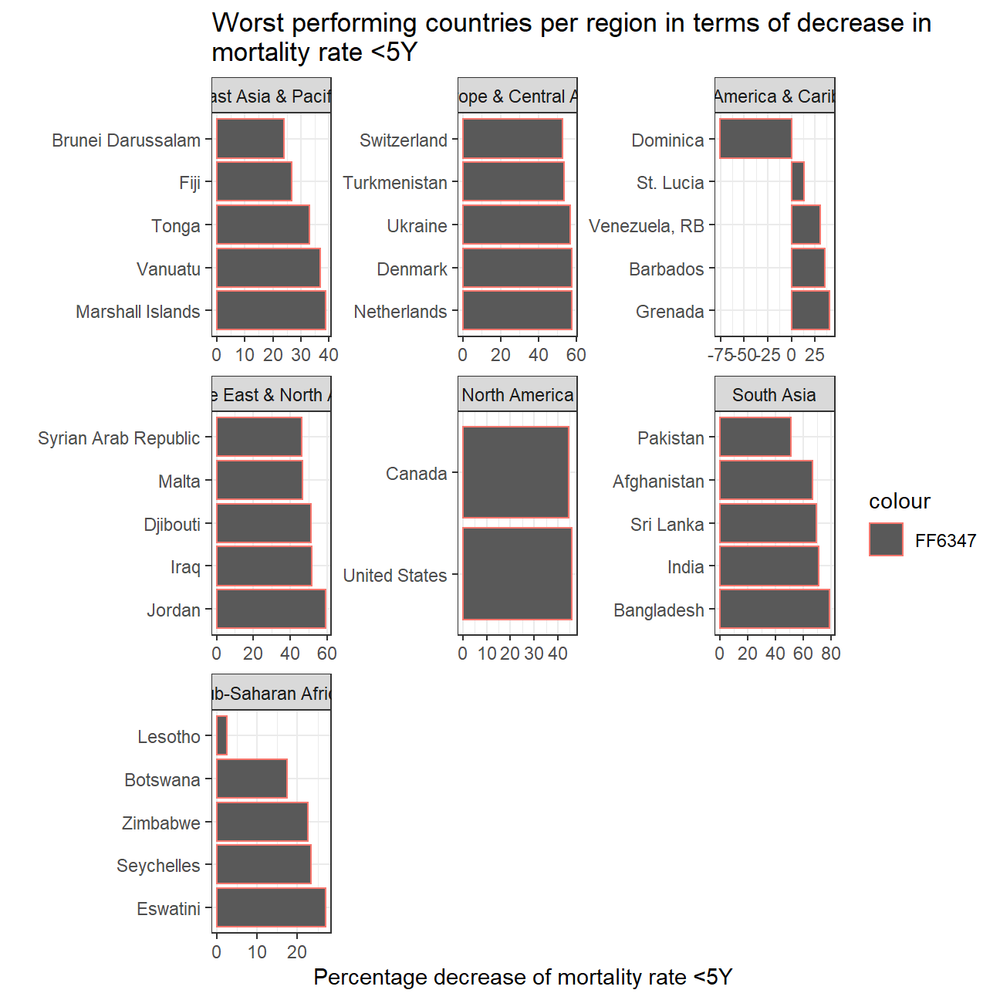
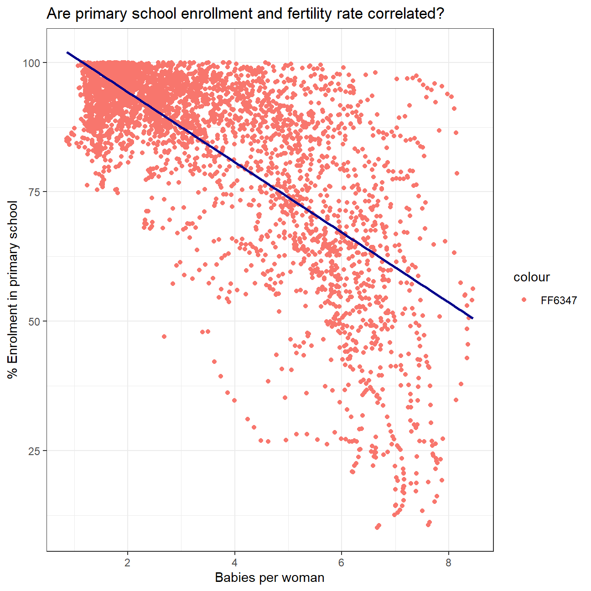

In this part, we will join a few dataframes with more data than the ‘gapminder’ package. Specifically, you will look at data on
We must use the wbstats package to download data from the World Bank. The relevant World Bank indicators are SP.DYN.TFRT.IN, SE.PRM.NENR, NY.GDP.PCAP.KD, and SH.DYN.MORT
# load gapminder HIV data
hiv <- read_csv(here::here("data","adults_with_hiv_percent_age_15_49.csv"))
life_expectancy <- read_csv(here::here("data","life_expectancy_years.csv"))
# get World bank data using wbstats
indicators <- c("SP.DYN.TFRT.IN","SE.PRM.NENR", "SH.DYN.MORT", "NY.GDP.PCAP.KD")
library(wbstats)
worldbank_data <- wb_data(country="countries_only", #countries only- no aggregates like Latin America, Europe, etc.
indicator = indicators,
start_date = 1960,
end_date = 2016)
# get a dataframe of information regarding countries, indicators, sources, regions, indicator topics, lending types, income levels, from the World Bank API
countries <- wbstats::wb_cachelist$countriesYou have to join the 3 dataframes (life_expectancy, worldbank_data, and HIV) into one. You may need to tidy your data first and then perform join operations. Think about what type makes the most sense and explain why you chose it.
First, we tidy the data, so that the dataframes can all be merged. The worldbank_data seems to be adhering the the three rules (every variable has own column, row and cell). The only thing we have to do here is rename some of the variables to make working with them easier. However, the HIV and Life_Expectancy datasets are not structured in a similar way. Instead of havin them in Matrix format of (country x year), we use the pivot_longer to create one list of variables for every country and every year. Lastly, considering we will need the regions later, we restructure the countries dataframe so that we only keep the data that is interesting for us. This will make the final dataframe we’ll work with a lot cleaner.
tidy_hiv <- hiv %>%
pivot_longer(cols=2:34,
names_to="Year",
values_to="HIV") %>%
mutate("Year"=as.numeric(Year))
tidy_life_expectancy <- life_expectancy %>%
pivot_longer(cols= 2:302,
names_to="Year",
values_to="Life_Expectancy")%>%
mutate("Year"=as.numeric(Year))
tidy_worldbank_data <- worldbank_data %>%
rename("Year" = "date",
"GDP_Capita" = "NY.GDP.PCAP.KD",
"Education" = "SE.PRM.NENR",
"Mortality_Rate" = "SH.DYN.MORT",
"Fertility_Rate" = "SP.DYN.TFRT.IN")
tidy_countries <- countries %>%
summarize (country=country,
region=region)Now that we have tidied the data, we add these three tidy dataframes (hiv, life expectancy and countries) to the worldbank dataset, using the full_join function. The dataset ‘full_dataset’ will now contain all the necessary information to answer the questions here below.
half_full <- full_join(tidy_worldbank_data, tidy_hiv, by= c("Year","country"))
three_datasets <- full_join(half_full, tidy_life_expectancy, by= c("Year", "country"))
full_dataset <- full_join(three_datasets, tidy_countries, by= "country")1. We generate a plot comparing HIV prevalence and life expectancy
Q1 <- full_dataset %>%
filter(!is.na(HIV)) %>%
filter(!is.na(Life_Expectancy)) %>%
filter(!is.na(region))
ggplot(Q1, aes(x=HIV, y=Life_Expectancy)) +
geom_point(aes(color="FF6347")) +
labs(x="HIV percentage", y="Life expectancy") +
ggtitle("HIV prevelance lowers the life expectancy") +
scale_x_log10() +
facet_wrap(~region, scales="free") +
theme_bw() +
geom_smooth(method='lm', se=FALSE, color="dark blue")
cor_test(Q1$HIV, Q1$Life_Expectancy)##
## Pearson's product-moment correlation
##
## data: x and y
## t = -35, df = 3115, p-value <2e-16
## alternative hypothesis: true correlation is not equal to 0
## 95 percent confidence interval:
## -0.555 -0.505
## sample estimates:
## cor
## -0.531Running a Correlation tests clearly shows that there is a negative relationship between HIV Prelevance and life expectancy. However, after running the ggplot, we can notice that this is the case for all regions apart for the ‘Europe & Central Asia’ one. The reason for this is unclear, but it could be that the countries with the higher HIV prevelance are located in areas where healthcare is better and where the impact of HIV on one’s life expectancy is thus lower.
2. Second, we analyze the relationship between fertility rate and GDP per capita?
Q2 <- full_dataset %>%
filter(!is.na(Fertility_Rate)) %>%
filter(!is.na(GDP_Capita)) %>%
filter(!is.na(region))
ggplot(Q2, aes(x=Fertility_Rate, y=GDP_Capita)) +
geom_point(aes(color="FF6347")) +
labs(title= "Countries where many kids are born per woman tend to have a \nlower GDP per Capita",
x="Babies per woman",
y="GDP per capita") +
scale_y_log10() +
theme_bw() +
facet_wrap(~region, scales="free") +
geom_smooth(method='lm', se=FALSE, color="dark blue")
cor_test(Q2$Fertility_Rate, Q2$`GDP_Capita`)##
## Pearson's product-moment correlation
##
## data: x and y
## t = -54, df = 8440, p-value <2e-16
## alternative hypothesis: true correlation is not equal to 0
## 95 percent confidence interval:
## -0.525 -0.493
## sample estimates:
## cor
## -0.509Similarly to the last question, we find a highly correlated, negative relationship. However, this relationship between the fertility rate and the GDP per capita seems to be present not only in general, but also applies to all the regions individually. Countries where women have a large amount of kids tend to have a lower GDP per capita than the countries where women have a lower amount of kids.
3. We will now find out which region has the largest amount of missing data for HIV
Q3 <- full_dataset %>%
group_by(region) %>%
summarize(total_HIV=sum(is.na(HIV))) %>%
arrange(desc(total_HIV)) %>%
filter(!is.na(region)) %>%
filter(!region=="Aggregates")
ggplot(Q3, aes(x=total_HIV, y=reorder(region, total_HIV), color="FF6347")) +
geom_col() +
theme_bw() +
labs(title= "Europe & Central Asia is the region with the most missing values",
x= "Number of missing values",
y=" ")
Clearly, the region with the largest amount of missing values is ‘Europe and Central Asia’, followed by ‘Sub-Saharan Africa’.
4. Now we try to figure out how the mortality rate has changed by region, and the top 5 countries who have known the greatest and worst improvement
Looking at the dataset, it is impossible to compare all countries for the full timeline in the data. This is because not all countries’ data for mortality rate starts in 1960. Some countries start showing data later. The most extreme example is Guinea-Bissau, where data for mortality rate is only mentioned from 1985 onwards. Instead of looking at the data, we will thus answer this question, using a range of 30 years (1986-2016).
First we prepare a new dataset which contains the change of in mortality rate per country.
Q4_1 <- full_dataset %>%
filter(!is.na(Mortality_Rate)) %>%
select(c(country,region,Year,Mortality_Rate)) %>%
pivot_wider(names_from = Year, values_from=Mortality_Rate) %>%
rename(start= '1986',
end= '2016') %>%
mutate(change =((end - start)/start)*-100) Now, we group the average of the change between 1986 and 2016, group them by region and plot them in a descending order.
Q4_2 <- Q4_1 %>%
group_by(region) %>%
summarize(average_change=mean(change)) %>%
arrange(desc(average_change))
ggplot(Q4_2, aes(x=average_change, y=reorder(region, average_change), color="FF6347")) +
geom_col() +
theme_bw() +
labs(title= "South Asia has experienced the largest improvement in \nmortality rate under 5 years old",
x= "Percentage decrease of mortality rate <5Y",
y=" ")
Clearly, South Asia has improved the most in the past 30 years in terms of mortality rate for children smaller than 5 years, followed closely by Europe & Central Asia.
Now that we have this information, it is time to figure out, who were the best performers per region and who were the worst performers.
Q4_3 <- Q4_1 %>%
select(c(country, region, change)) %>%
arrange(change)
Top_5 <- Q4_3 %>%
group_by(region) %>%
top_n(n=5, wt=change) %>%
arrange(desc(change))
Worst_5 <- Q4_3 %>%
group_by(region) %>%
top_n(n=-5, wt=change) %>%
arrange(change)
ggplot(Top_5, aes(x=change, y=reorder(country,change), color="FF6347")) +
geom_col() +
theme_bw() +
labs(title= "Best performing countries per region in terms of decrease in \nmortality rate <5Y",
x= "Percentage decrease of mortality rate <5Y",
y=" ") +
facet_wrap(~region, scales = "free_y")
ggplot(Worst_5, aes(x=change, y=reorder(country,-change), color="FF6347")) +
geom_col() +
theme_bw() +
labs(title= "Worst performing countries per region in terms of decrease in \nmortality rate <5Y",
x= "Percentage decrease of mortality rate <5Y",
y=" ") +
facet_wrap(~region, scales = "free") North America has a top and worst 2 as there are only two countries in that region. All the other regions have a top and worst 5.
The best performing countries have experienced a decrease in the mortality rate of just over 91% compared to 1986. West-European and North-American countries tend to score worse as their base mortality rate was better to start of with.
The worst performing country is by far Dominica, where child mortality under 5 years has not improved, but has actually become worse over the time period. What we concluded for West-European countries becomes prelevant now. Switzerland is the worst performer for the Europe and Central Asia region, but that is because it already started with a low mortality rate to start with.
5. Lastly, we will take a look at the relationship between primary school enrollment and fertility rate
Q5 <- full_dataset %>%
filter(!is.na(Education)) %>%
filter(!is.na(Fertility_Rate))
ggplot(Q5, aes(x=Fertility_Rate, y=Education, color="FF6347")) +
geom_point() +
labs(title= "Are primary school enrollment and fertility rate correlated?",
x="Babies per woman",
y="% Enrolment in primary school") +
theme_bw() +
geom_smooth(method='lm', se=FALSE, color="dark blue")
cor_test(Q2$Fertility_Rate, Q2$`GDP_Capita`)##
## Pearson's product-moment correlation
##
## data: x and y
## t = -54, df = 8440, p-value <2e-16
## alternative hypothesis: true correlation is not equal to 0
## 95 percent confidence interval:
## -0.525 -0.493
## sample estimates:
## cor
## -0.509Once more, we discover a negative correlation between the two variables at hand. Countries where women have a larger amount of kids are also countries where a lower % of the kids goes to primary school.